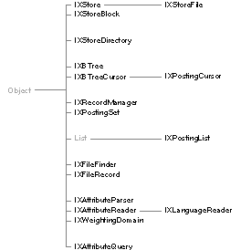

Copyright ©1995 by NeXT Computer, Inc. All Rights Reserved.
| 7 |
Indexing Kit
| Library: | libIndexing_s.a | |
| Header File Directories: | /NextDeveloper/Headers/btree /NextDeveloper/Headers/indexing /NextDeveloper/Headers/store |
| Introduction |
| The Indexing Kit is a set of programmatic tools for managing data, especially the large amounts of data characteristic of information-intensive applications. Much as the Application Kit provides a framework for a graphical interface, the Indexing Kit provides a framework for data management.
The Indexing Kit supplies facilities for building custom databases and for searching the UNIX file system. Key benefits include guaranteed data integrity, excellent performance, thread-safe operation, tight integration with the NEXTSTEP programming environment, and the ability to efficiently store and retrieve Objective C objects and unstructured data like text, sound, and images. The Indexing Kit consists of: |
| A transaction-oriented foundation for storing and retrieving persistent data, using virtual memory mapping for efficient random access to parts of a file without reading or writing the entire file. Transactions guarantee data integrity on persistent storage media, and are also used to manage concurrent access to shared data. | ||
| Fast sequential and associative access to stored data. Associative access is untyped, in that the programmer defines the data types of keys and their ordering by means of a comparison function or a format string. | ||
| A simple data management capability based on the Objective C run-time system. Records can be moved efficiently between working memory and the storage substrate in the form of Objective C objects. Multiple indexes can be built over programmer-defined attributes, so that records can be ordered and retrieved by the values of their indexed attributes. | ||
| A general query processing facility, including a declarative query language and its interpreter. Queries can be applied to individual objects, to collections of objects, or to the attribute/value lists produced by Indexing Kit's customizable text processing tools. | ||
| High-level file system searching facilities based on the supporting layers described above, including fast literal searching of file contents. |
| Architecture of the Indexing Kit
The Indexing kit has four layers, corresponding to the areas of functionality described above (the query and text processing tools are part of the data management layer, but are described apart from it). Classes at each layer rely on the services provided by the lower layers. There are a total of seventeen classes and fifteen protocols in the Indexing Kit. |
|  |
| Figure 7-1. The Indexing Kit Inheritance Hierarchy
Storage Management The foundation of the Indexing Kit consists primarily of the IXStore and IXStoreFile classes, along with IXStoreBlock. There are two protocols at this layer: IXBlockAndStoreAccess and IXNameAndFileAccess. IXStore is a fast, transaction-oriented, compacting storage allocator, providing efficient storage management within a single address space. IXStoreFile is a file-based subclass of IXStore. IXStoreBlock is a convenience class for creating objects that refer to individual blocks of storage within an IXStore. An IXStore is an array of resizable blocks of untyped storage. Each block is identified by an integer handle. Classes in the layers above the storage management layer add data typing and specialized identification and retrieval mechanisms to this basic model. IXStore defines a transaction model that permits thread-safe, shared access to data and allows changes to data to be reversed. These features guarantee data integrity in the context of shared access or in the event of program or system interruption. They can be used to build databases and other structured collections of data. The IXBlockAndStoreAccess and IXNameAndFileAccess protocols, along with the IXStoreDirectory class from the associative access layer, are used to create store clients. A store client is an object that manages data in an IXStore. A store client is a persistent object; since its data resides in the store, its run-time representation can be freed and later reconstituted from that same data. The primary classes at the higher layers of the Indexing Kit are store clients. For detailed information on the storage model and on transaction management, see the IXStore class specification. For information on creating store clients, see the IXBlockAndStoreAccess and IXNameAndFileAccess protocol specifications and the IXStoreDirectory class specification.
Associative Access The classes of the Indexing Kit's associative access layer are IXBTree, IXBTreeCursor, IXStoreDirectory, IXPostingCursor, and IXPostingSet. Protocols defined at this layer are IXCursorPositioning, IXComparatorSetting, IXComparisonSetting, IXPostingExchange, and IXPostingOperations. IXBTree and IXBTreeCursor add a flexible associative retrieval model to IXStore. Untyped blocks of storage, called values, are identified by keys of an arbitrary type, and are logically arranged in an ordered key space. This allows the values to be identified by such things as strings or floating-point numbers, or even complex structures. The programmer using an IXBTree defines its key space with methods declared in the IXComparatorSetting and IXComparisonSetting protocols, providing either a function that compares keys, or a comparison format that describes the keys. Access to an IXBTree's key space is provided by the IXBTreeCursor class. An IXBTreeCursor is an object that can move within an IXBTree's key space and access the value stored at its current position. Multiple IXBTreeCursors can be used concurrently in the same IXBTree, providing for shared access to the data. An IXStoreDirectory uses an IXBTree to provide a naming scheme for store clients within a single IXStore. See the description of the storage management layer and the IXStoreDirectory class specification for more information. IXPostingCursor, a subclass of IXBTreeCursor, maintains attribute inversions, in which the value of a specified attribute of a collection of data items is used as a key in a secondary IXBTree. The value stored under each key in the secondary IXBTree is a set of postings, which are weighted references to data items in the collection. The posting set for a particular key contains references to all data items in the collection whose attribute is equal to that key. An IXPostingSet holds a set of postings in working storage. Its primary use is for combining sets of postings: an IXPostingSet can perform a set union, intersection, or difference with another IXPostingSet (or any object conforming to the IXPostingExchange protocol, described below). This allows records to be selected from a collection according to more than one criterion. For example, an IXPostingSet might be initialized from an IXPostingCursor for the "department" attribute of a collection of employees. The set would hold references to all employee records in the collection that belonged to the department defined by the IXPostingCursor's key position, for example, "accounting." To find all employees in that department with a given income, the set could then be refined by intersection with an IXPostingSet derived from an inversion on the income attribute. The IXPostingExchange protocol declares methods for trading sets of postings, and the IXPostingOperations protocol declares methods for retrieving information about postings and for adding postings to or removing postings from a set. For detailed information on key spaces and cursoring, see the IXCursorPositioning protocol specification. For information on working with postings, see the IXPostingCursor and IXPostingSet class specifications and the IXPostingOperations protocol specification.
Data Management The data management classes are IXRecordManager and IXPostingList. The data management protocols are IXRecordReading, IXRecordWriting, IXRecordTranscription, IXTransientAccess, and IXTransientMessaging. IXRecordManager maintains a repository of Objective C objects that represent individual records, and builds and maintains indexes on those records. Each index is based on one attribute of the objects in the repository. An attribute is defined by a name and a selector; the attribute's value for a given object is the value returned by the designated message for that object. An attribute's scope is necessarily restricted to those objects that respond to the designated message, and may optionally be restricted further to the instances of a designated class or any of its subclasses. A text parser may be attached to a text valued attribute to invert the component lexemes (words or phrases that are to be treated as individual terms), rather than the entire piece of text. When objects are added to the IXRecordManager, they are automatically added to any attribute indexes that apply. As a structured storage facility, IXRecordManager provides a fast and space-efficient serializing mechanism based on Objective C run-time information for objects conforming to the appropriate Indexing Kit protocols (by default, however, it uses the standard read: and write: archiving messages, so that it can store objects that don't conform to those protocols). When referring to the serializing mechanism, objects are said to be passivated and activated rather than archived and unarchived. Since objects may contain references to data whose length can't be determined from the run-time information, IXRecordManager sends a notification message to an object being passivated or activated, allowing the object to store or retrieve any data that needs special handling. IXRecordManager also provides direct access to the instance variables and method return values of passivated objects, eliminating the need to explicitly activate objects in order to query their content or state. Records can be retrieved through an attribute index with an IXPostingCursor. The IXPostingCursor is simply positioned at the desired key, and the postings for that key are then used to activate the objects. IXPostingSets can be used to retrieve records based on compound criteria. IXPostingList, a subclass of List, performs lazy instantiation of retrieved objects. An IXPostingList can be initialized with a set of postings retrieved from an index, and thereafter behaves as a List, returning an object corresponding to the posting at a particular position in the List on demand. This frees the programmer from having to explicitly activate a set of retrieved objects one at a time. For more information on data management, see the IXRecordManager class specification. For more information on object passivation and activation in the Indexing Kit, see the IXRecordTranscription, IXRecordReading, and IXRecordWriting protocol specifications.
File System Searching There are two classes and two protocols in the file system searching layer. The classes are IXFileFinder and IXFileRecord, and the protocols are IXFileFinderConfiguration and IXFileFinderQueryAndUpdate. IXFileFinder extends the capabilities of IXRecordManager to the UNIX file system, treating files in a subtree of the file system as records. The archive actually contains IXFileRecord objects, which are used as proxies for the files. An IXFileFinder can automatically update its indexes in a background thread, and supports concurrent querying by multiple programmer-supplied threads, as well. It can be configured to ignore specific files or types of files, and has options for ignoring file systems mounted within its subtree of the file system and for traversing symbolic links. IXFileFinder supports the Indexing Kit's query language, allowing for searches by whole or partial word in specific attributes. Searches can be made using literal strings and regular expressions. A full suite of arithmetic, relational, and other operators are also available. For information on using IXFileFinder, see the IXFileFinderQueryAndUpdate protocol specification and "The Indexing Kit Query Language" in the "Other Features" section.
Text Parsing The Indexing Kit's text parsing system is made of four classes and a protocol. The classes are named IXAttributeParser, IXAttributeReader, IXLanguageReader, and IXWeightingDomain. The protocol is and IXLexemeGeneration. The text parsing system builds attribute/value lists from unstructured text. An IXAttributeParser uses a list of one or more IXAttributeReaders to break the text into individual lexemes, which it can then count and classify. The lexemes are assigned weights based on their frequency of occurrence for a given attribute. Lexemes can be weighted absolutely, by frequency, or by peculiarity. Peculiarity weighting uses an IXWeightingDomain, which holds lexeme counts and rankings for a reference domain, usually a large collection of text, such as the collected works of William Shakespeare. Lexemes that are common in the reference domain will have a lower peculiarity than lexemes that are rare in the domain. The process of decomposing a text stream into its constituent lexemes can be customized by creating a subclass of IXLanguageReader, itself a subclass of IXAttributeReader. Language-specific readers are provided for all languages supported by NeXT. Custom readers can be written to analyze specific languages or types of text, to reduce related terms to a common form, and to recognize multi-word lexemes. For more information on text parsing, see the IXAttributeParser class description and "Attribute Reader Format" in the "Other Features" section.
Query Processing The query processing system is made of one class, IXAttributeQuery, and the Indexing Kit's query language. IXAttributeQueries accept query expressions formulated in the query language. It evaluates these against an IXRecordManager or IXFileFinder to return an IXPostingList containing those objects which match the query. For more information on text parsing, see the IXAttributeQuery class description and "The Indexing Kit Query Language" in the "Other Features" section.
Portability Issues The Indexing Kit makes accessing data as architecture-independent as possible, but since it also allows your application to directly access file-based data at a very low level, you need to be aware of portability issues when using file-based data. For an introduction to application and data portability, see /NextLibrary/Documentation/NextDev/Concepts/PortabilityGuide.rtf. With regard to portability, there are two types of data in the Indexing Kit: data whose type is known, and data whose type isn't known. The Indexing Kit automatically converts the byte-order of typed arguments to methods or functions. Any argument declared as an untyped void *, however, must be handled by your application. The Indexing Kit expects all data in a store file to be big-endian, so your application should always write data as big-endian, and convert it from big-endian if needed when reading. If an Indexing Kit method or function requires you to swap byte-order of arguments or results, the documentation will contain a note to that effect. In addition to byte-order, your application must handle alignment issues for structures stored in files. The Portability Guide outlines the proper way to declare portable structures under "Memory-mapped Data." If you follow its suggestions, you should have few problems. |